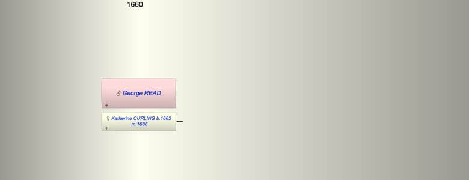

| [Index] |
| George READ |
|  |
| m. 18 Feb 1686 Katherine CURLING (1662 - ) at St Andrew, Canterbury |
| Events in George READ's life | |||||
| Date | Age | Event | Place | Notes | Src |
| 18 Feb 1686 | Married Katherine CURLING (aged 24) | St Andrew, Canterbury | Note 1 | ||
| Note 1: Catherine Curling 23 of St Peter and George Read 22 mariner of St Peter ex East Kent Marriage index |
| Created on a Mac™ using iFamily for Mac™ on 8 Oct 2023 |